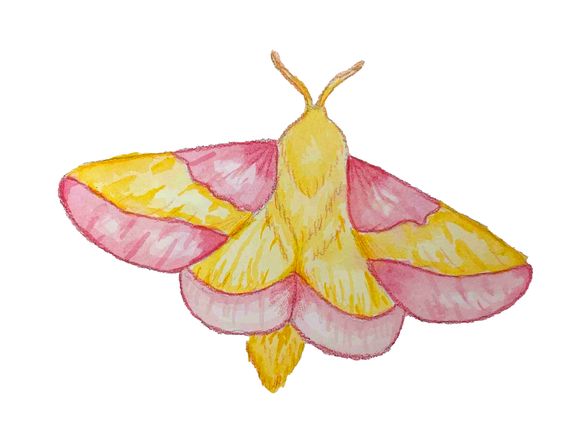

Rosy Maple Moth
30-50 MM
Oak and maple trees, North American deciduous forests
Nova Scotia to Minnesota, Florida to east Texas
A pink and yellow moth is probably an unusual sight for many people. It is not often that a moth is referred to as cute, but that adjective has been used to describe Dryocampa rubicunda, or the rosy maple moth. Many people seem to find its pink and yellow wings, its furry yellow body, and its pink appendages appealing. The insect lives in eastern North America and host typically on maple trees. Like most Saturniidae moths, they do not feed, and only live for a short period of time.